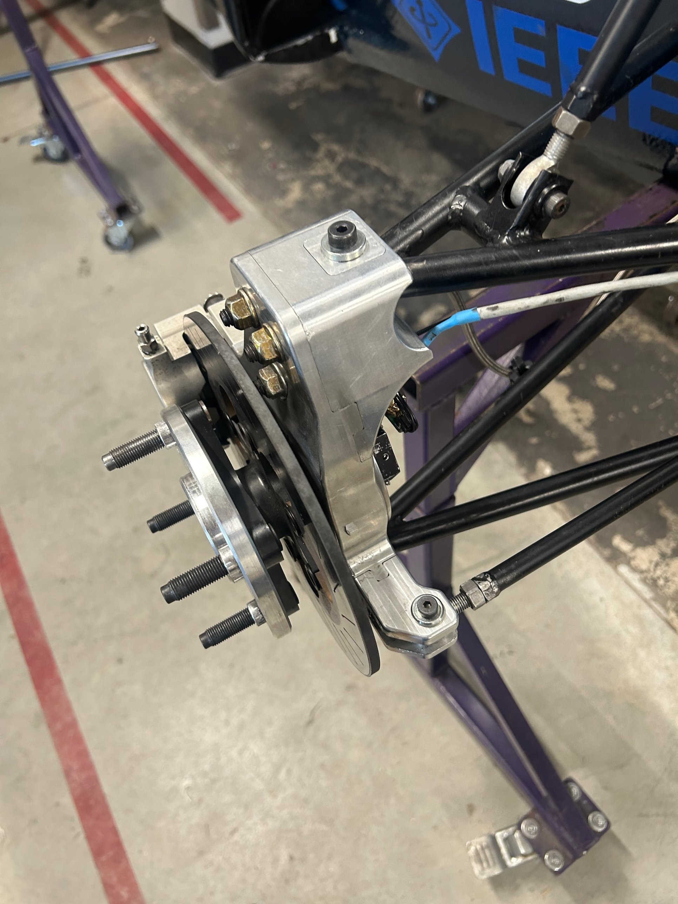
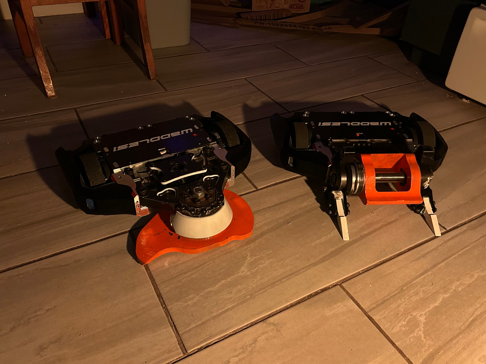

Joshua
Buttrick
Mechanical Engineering Student
I study mechanical engineering at Worcester Polytechnic Institute on a Presidential Scholarship. I design, machine, and test mechanical parts, from CNC-machined components to combat robots, and I teach CAD and machining to high school students.
Projects
Work
Valco Instruments
Work
Team

Formula SAE: Wheel Assembly
Team
Team

WPI Combat Robotics
Team
Mentoring
FIRST Robotics Team 190
Mentoring
Academic
Interactive Qualifying Project
Academic
Academic
Sustainable Skylines
Academic
Academic
Design of Machine Elements
Academic
Teaching
Teaching and Curriculum
Teaching